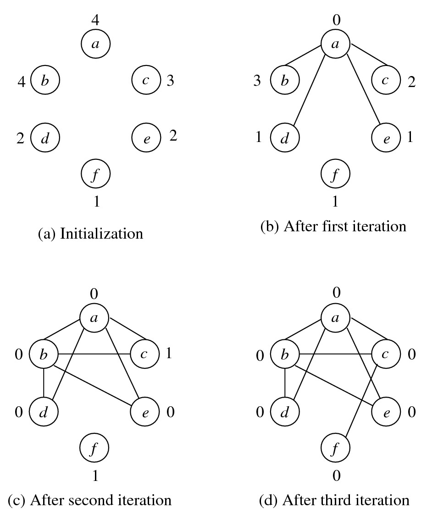
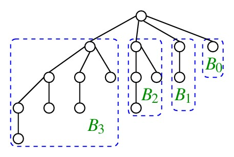
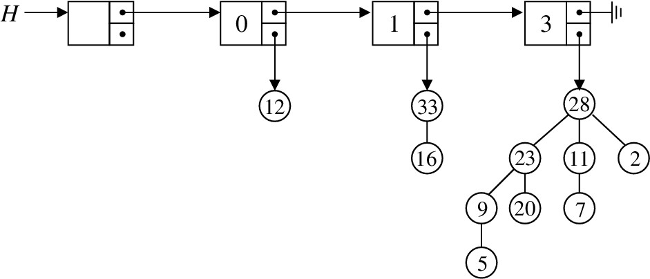
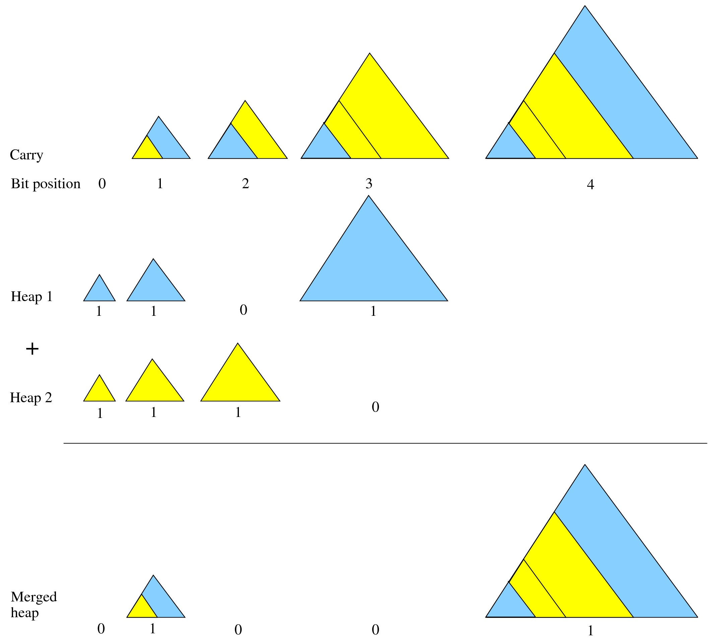

Programming Assignment 2
Realization of Graphic Sequences Using Binomial Heaps
Graphic sequences
Let G = (V,E) be an undirected graph with n vertices. Denote the vertex set of G as {0, 1, 2, ..., n - 1}. Let the degree of the vertex i be denoted as di. We call d0, d1, d2, ..., dn - 1 a graphic sequence. Given a sequence of non-negative integers, your task is to first determine whether the sequence belongs to a graph, and if so, construct a graph with that degree sequence.
Read n from the user, and randomly generate an array d [ ] of n non-negative integers (between 0 and n - 1). Sort the array in decreasing order. Erdös and Gallai (1960) proved that this sequence is graphic if and only if d0 + d1 + d2 + .... + dn - 1 is even, and for all k = 0, 1, 2, ..., n - 1, the following inequality holds:
d0 + d1 + d2 + ... + dk <= k(k+1) + min(dk+1,k+1) + min(dk+2,k+1) + min(dk+3,k+1) + ... + min(dn- 1,k+1).Use this criterion to check whether the random sequence generated above is graphic. If not, quit. Otherwise, proceed as follows.
Havel (1955) and Hakimi (1961) give an algorithm to construct a graph with a given graphical degree sequence. The basic idea is to choose the largest degree d in the sequence. Connect a vertex to d vertices of the next highest degrees. Iterate until no vertices are left whose degrees remain to be balanced. The following pseudocode implements Havel and Hakimi's algorithm.
Create an empty graph G.
Insert d0, d1, d2, ..., dn - 1 in a heap H.
While H is not empty, repeat {
(d,u) = findmax(H).
H = delmax(H).
Initialize H1 to an empty heap.
for i = 1,2,...,d, do {
(r,v) = findmax(H).
H = delmax(H).
Add the undirected edge (u,v) to G.
Insert (r - 1,v) to H1 (may be conditionally when r > 1).
}
H = merge(H,H1).
}
The following figure illustrates the working of the above algorithm. The residual degrees (that is, degrees yet to be balanced) are shown beside the vertices.
 The Havel-Hakimi algorithm seems to highlight the necessity of having efficiently mergeable heaps. Is this the reason why we should discard our basic binary heaps? Well, no. Indeed, using suitable augmentation, a binary heap too can be used in this application. Even a decreasingly sorted array with re-sorting after each iteration of the Havel-Hakimi loop also offers an efficient algorithm. It is only that implementing binomial heaps is part (the major part actually) of this assignment. So enter the realm of segmentation faults. Sorry for spoiling your evening(s)!!!
Binomial trees
The binomial tree Bk of order k is a rooted tree defined recursively as follows. B0 contains only one node (which is the root). For k > 1, the tree Bk has k child nodes, where the i-th child node is the root of the tree Bk - i for i = 1, 2, 3, ..., k. The binomial tree B4 is shown in the figure below.
 Store a binomial tree as a binary tree in the first-child-next-sibling representation. Each node in the tree should store a degree (the residual degree) and a vertex number (in addition to the pointers).
Write a function that, given two disjoint binomial trees of the same order k in the first-child-next-sibling representation, returns the binomial tree of order k + 1 in the same representation. Your function should run in O(1) time. Make the tree with the smaller root value (the degree) the first child of the root with the larger value.
Binomial heaps
Binomial heaps, also called binomial queues, are introduced by Jean Vuillemin in 1978. Any non-negative integer n can be uniquely represented as n = 2k1 + 2k2 + ... + 2kr with 0 <= k1 < k2 < ... < kr for some r > = 0. A binomial heap H storing n elements has the following two properties:
- Structural property: H is represented by the collection of the r binomial trees Bk1, Bk2, ..., Bkr.
- Ordering property: Each node in the forest stores a value (degree) larger than or equal to the values stored in all its child nodes.
In order to store a binomial heap, create a linked list of the roots of the binomial trees sorted in the increasing order of the orders of the trees. The following figure shows a binomial heap with 11 = 1 + 2 + 8 elements. A dummy node is used at the beginning of the linked list. This would help the implementations of insertion and deletion in H.
 First, write a function to merge two binomial heaps. The process mimics the bit-by-bit addition operation of integers with carry propagation. The following figure demonstrates merging two heaps of sizes 11 and 7 respectively.
 A more concrete example
Write a linear-time divide-and-conquer function makeheap() in order to create an initial heap on the random degree sequence. Use the merge function described above.
Write an insert() function to insert a single element to a binomial heap. Convert the element to be inserted into a one-element heap, and then merge this one-element heap with the other heap.
Write a function findmax() to locate the binomial tree in a heap, whose root contains the maximum value (degree).
Write a function to delete the maximum from a binomial heap. In order to do that, first locate the tree B whose root contains the maximum element. Let this tree be of order i. Deleting the root creates i binomial trees (the children of the deleted root). Insert these trees in a temporary heap. Delete the tree B from the original heap. Merge the temporary heap with the original heap.
Check for Correctness
Using the heap functions, implement the Havel-Hakimi algorithm. The representation of the graph (adjacency matrix or adjacency list) is your choice. After the termination of the Havel-Hakimi algorithm, compute the degrees of the nodes in the graph created. If all the degrees match with the respective degrees input to the Havel-Hakimi algorithm, your program is obviously correct.
Sample Output
Present your output as in the following format.$ ./a.out 89 +++ Sequence generated: 82, 80, 80, 80, 80, 79, 79, 78, 77, 77, 75, 73, 73, 71, 70, 67, 67, 67, 66, 66, 65, 64, 64, 62, 61, 61, 59, 58, 58, 57, 57, 54, 53, 52, 47, 47, 46, 46, 45, 44, 41, 41, 40, 40, 39, 37, 37, 37, 36, 34, 32, 32, 31, 29, 29, 28, 28, 27, 26, 24, 22, 21, 20, 20, 20, 19, 18, 18, 17, 17, 16, 15, 13, 13, 13, 13, 12, 11, 11, 10, 8, 8, 8, 5, 4, 3, 2, 1, 1 *** Error: The sequence is not graphic... $ ./a.out 89 +++ Sequence generated: 82, 81, 80, 79, 78, 78, 77, 75, 75, 73, 73, 72, 72, 71, 69, 69, 69, 69, 68, 68, 68, 67, 66, 65, 63, 63, 60, 59, 57, 56, 55, 55, 54, 53, 53, 52, 51, 50, 50, 50, 50, 49, 47, 47, 45, 45, 45, 44, 43, 41, 41, 41, 40, 39, 38, 36, 35, 35, 34, 34, 34, 33, 33, 33, 29, 29, 28, 27, 27, 26, 25, 24, 22, 19, 18, 18, 18, 14, 14, 13, 10, 10, 9, 8, 5, 4, 3, 1, 0 +++ Degree sequence is graphic... +++ Degree sequence stored in heap... +++ Graph generated... +++ Correctness verified... $Submission site